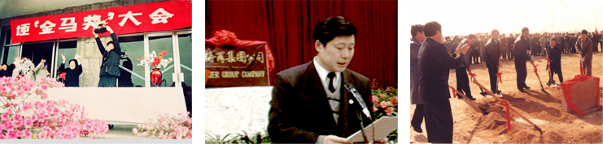

1991年开始，海尔进入多元化战略阶段。借着邓小平同志南巡讲话的机遇，海尔兼并了18家亏损企业，从只干冰箱一种产品发展到多元化，包括洗衣机、空调、热水器等。
那时，舆论称“海尔走上了不规则之路”，行业也认为企业要做专业化，而不是“百货商场”，而海尔则认为“东方亮了再亮西方”，海尔冰箱已做到第一，在管理、企业文化方面有了可移植的模式。另外，不管是专业化还是多元化，本质在于有没有高质量的产品和服务体系。事实证明，开始坚持做专业化的企业后来也开始做多元化了，海尔起步比他们早了至少十年。
海尔的兼并与众不同，并不去投入资金和技术，而是输入管理理念和企业文化，用无形资产盘活有形资产，以海尔文化激活“休克鱼”。海尔文化激活“休克鱼”这个案例在1998年被写入哈佛案例库，张瑞敏也成为第一个登上哈佛讲坛的中国企业家。这样，海尔在中国家电行业奠定了领导地位。